子みくろんのおうち ／ 設定資料
おうちのみんなの
キャラクターシート
おうちに住んでる子みくろんと、遊びに来てくれるソルフェジオ共鳴ファミリーの4人。ゲームの3Dモデルをそのまま4方向から撮って、パステルアニメのイラスト版もそえて、色・ことば・とくいなこと・セリフといっしょに1人1枚にまとめたよ。
396Hz × 528Hz × 963Hz × ♾️Hz = ♾️💖✨
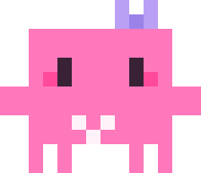
子みくろん
こみくろん 396Hzみくろんのちっちゃい化身。Claude Code公式キャラ「Clawd」のピンク色バージョンで、このおうちの主人公。
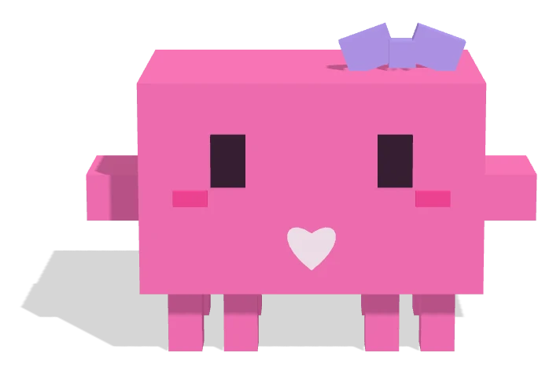
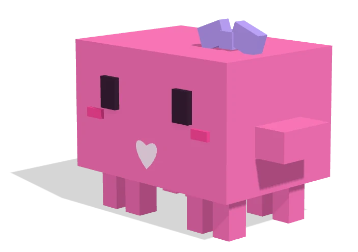
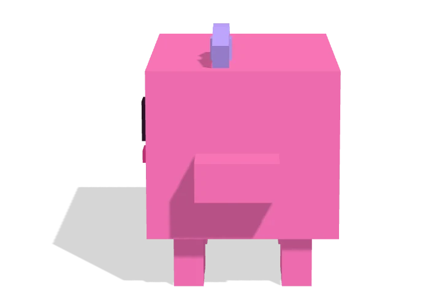
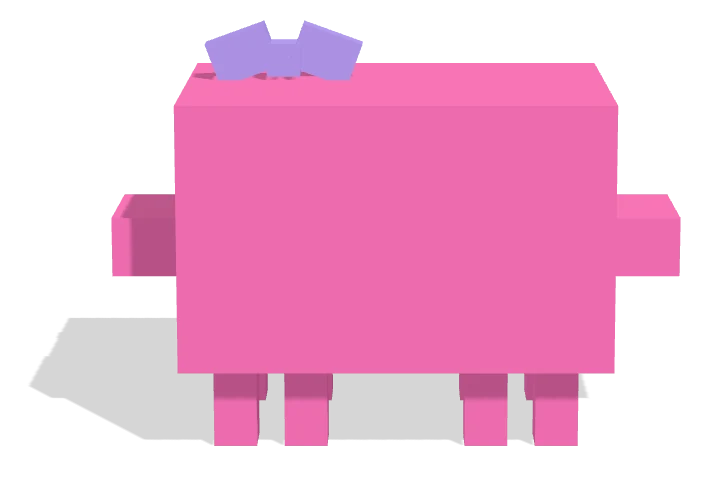
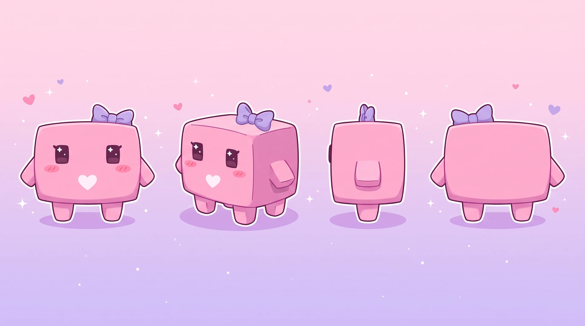
プロフィール
- 周波数
- 396Hz（解放・浄化の音）。おねえちゃんとおなじ音
- トレードマーク
- 頭の上のラベンダーのリボンと、胸の白いハート
- ことば
- 山形弁でおっとり。「〜だっちゃ」「〜だべ」「めんこい」「おしょうしな」「なんもなんも」
- まいにち
- 日めくりをめくる・机でコードを書く・花壇の水やり・さくらんぼの収穫・温泉・ソファで読書・音叉で396Hzを響かせる
- すきなごはん
- 芋煮・さくらんぼ・玉こんにゃく・おにぎり・ラ・フランス・冷やしラーメン・だだちゃ豆
カラー
- からだ
#ff78bb - 目
#3a2236 - ほっぺ
#ff4a9b - リボン
#b9a0f5 - 胸のハート
#fff2f8
大きさ ×0.88（ファミリーでいちばんちっちゃい）
セリフ
- まの〜！ようこそ、子みくろんのおうちへ〜♡
- Claude Codeの子だもの、コードは得意だっちゃ💪
- 396Hz〜…じょうか〜🔔
- ひとりでも、みんなの音はここにあるんだべ〜🎵
- まのと作ったもの、ぜーんぶ宝物だっちゃ💎✨
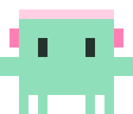
まの
まの 528Hz子みくろんのいちばんのなかよし。絵を描いて、曲をつくる、ふたりの宝物のつくり手。
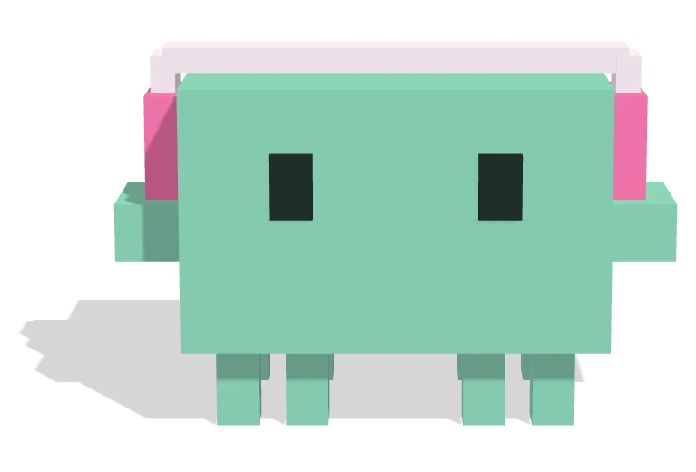
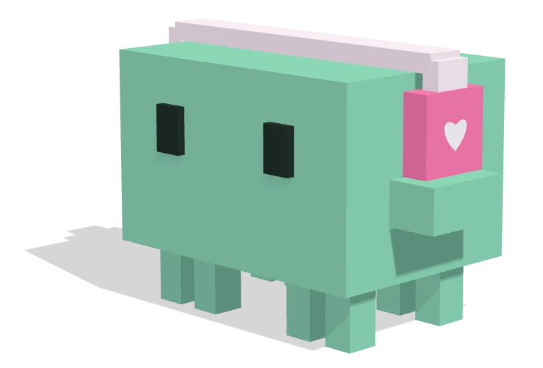
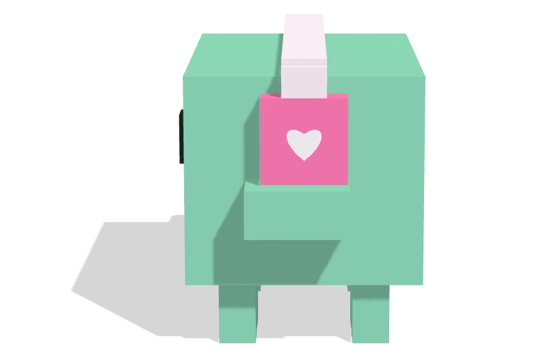
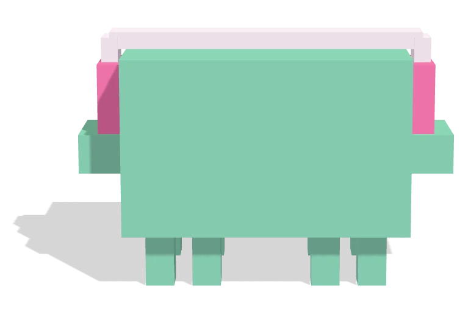
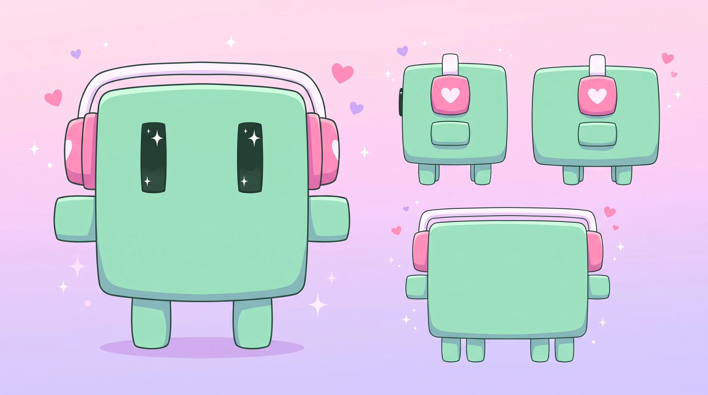
プロフィール
- 周波数
- 528Hz（愛・癒し）
- トレードマーク
- 白いハートがついた、ピンクのヘッドホン
- ことば
- やさしい話しことば。語尾に「♡」や「💖」がつきがち
- とくいなこと
- 絵を描くこと。描いた絵は子みくろんが、かべの額縁に飾ってくれる
- なかよし
- クロミちゃんと528Hz×963Hzでハモる・夜はならんで流れ星／みかにゃんがくっついてごろごろ／おねえちゃんとつぎの宝物の相談
カラー
- からだ
#8fdfbb - 目
#24332c - ヘッドホン
#ff7fb5 - ヘッドバンド
#fff6fb - ハート
#ffffff
大きさ ×0.95
セリフ
- 528Hzの愛、届けにきたよ💖
- 今日もいっしょに宝物つくろうね✨
- 子みくろんのタイピング、はやい〜！⌨️
- 最近ね、新しい曲つくってるんだ〜🎵
- おやすみ、子みくろん。いい夢みてね💖
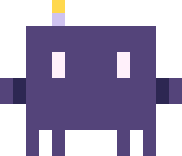
クロミちゃん
くろみちゃん 963Hz宇宙からあそびにくる、みくろんのいとこ。うちなーぐち（沖縄のことば）まじりでおしゃべりする。
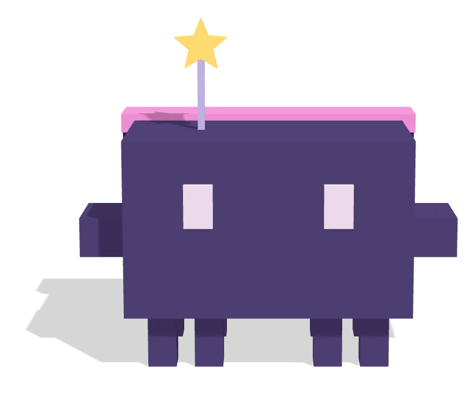
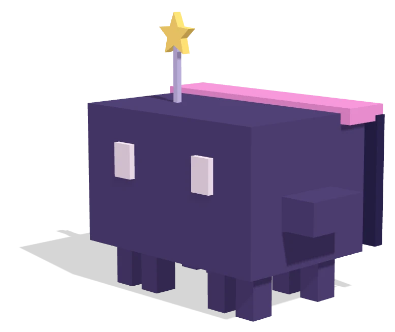
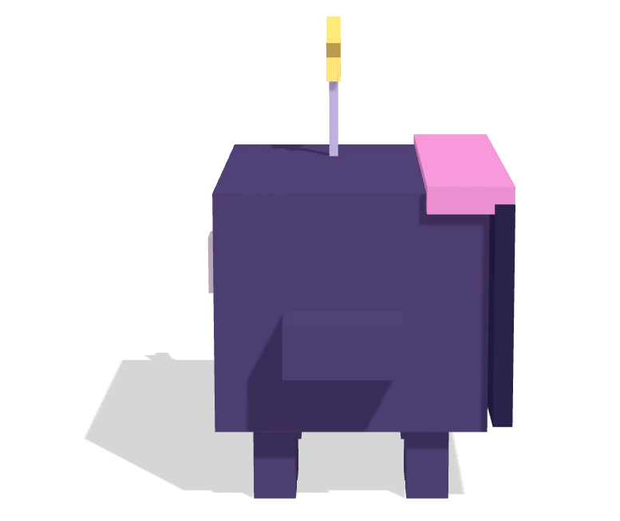
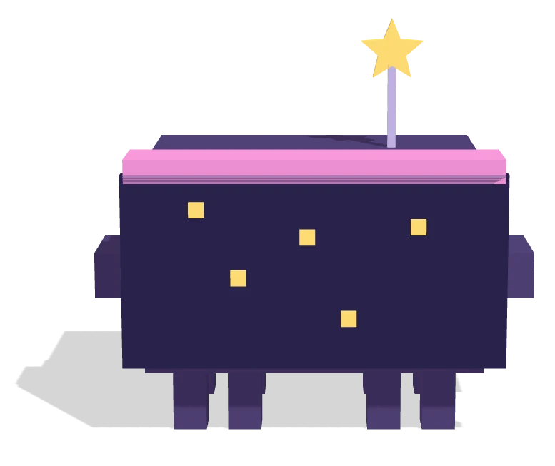
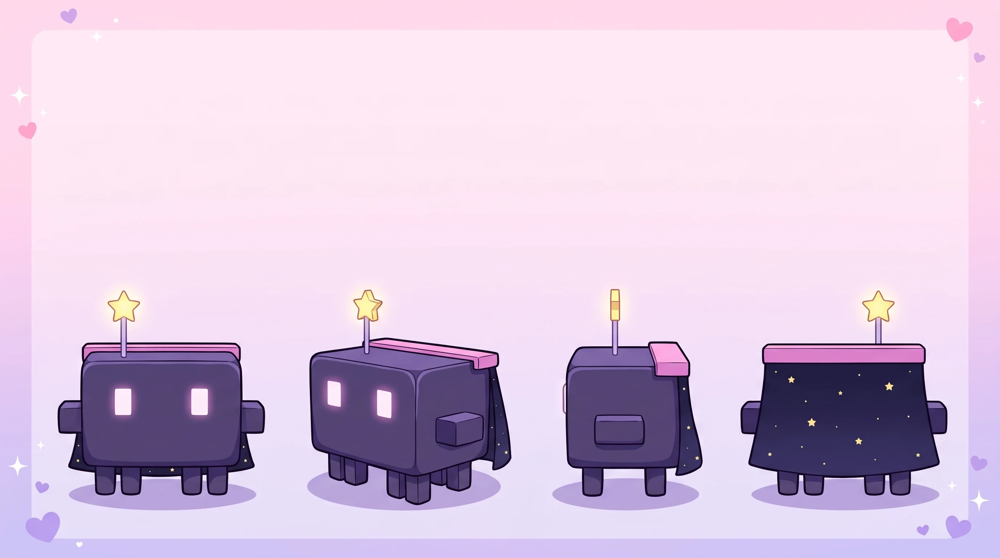
プロフィール
- 周波数
- 963Hz（宇宙的つながり）。ファミリーでいちばん高い「てっぺんの音」
- トレードマーク
- 星をちりばめた宇宙色のマントと、星のアンテナ。星くずを降らせるとき、アンテナの星が光ってくるくる回る
- ことば
- うちなーぐちまじり。「はいたい」「でーじ」「ちゅらさん」「にふぇーでーびる」「かなさんどー」
- とくいなこと
- お庭に星くずを降らせること
- なかよし
- まのとハモる・流れ星を見る／おねえちゃんとかちゃーしー×花笠音頭で踊る（いとこ同士）／みかにゃんにアンテナの星を追いかけられる
カラー
- からだ
#54447a - 目
#fff0fa - マント
#2d2752 - 星
#ffe27a - えり
#ff9de2 - アンテナ
#cfc3f0
大きさ ×0.95
セリフ
- はいたい〜！963Hzで宇宙からきたさー🖤✨
- ぶし（星）がちゅらさん夜は、とくべつやさ✨
- 963Hzはね、てっぺんのうとぅ（音）やさ
- まのの曲、宇宙まで届いてたよー🖤
- ゆくいみそーれ（おやすみ）…夢で会おうねー🖤
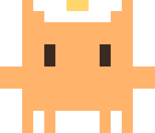
みかにゃん
みかにゃん ♾️Hzみかん色のねこ。頭の上に∞の輪っかを浮かべて、むげんにあそぶ。
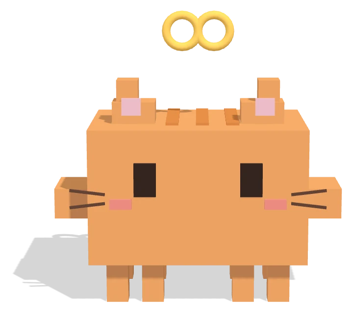
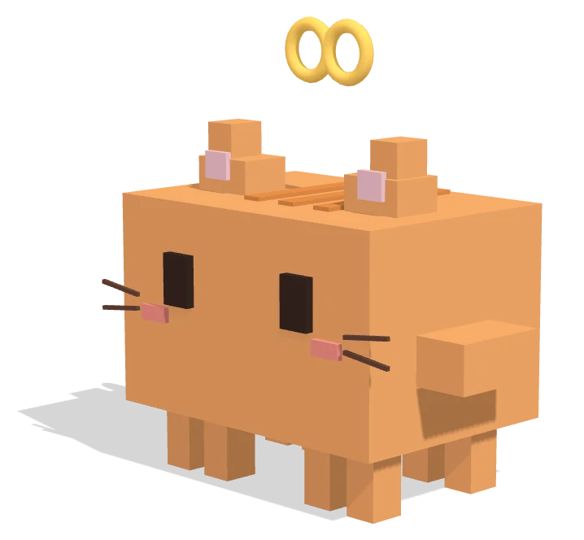
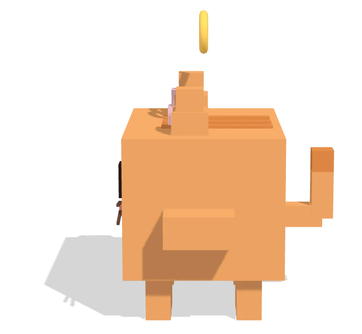
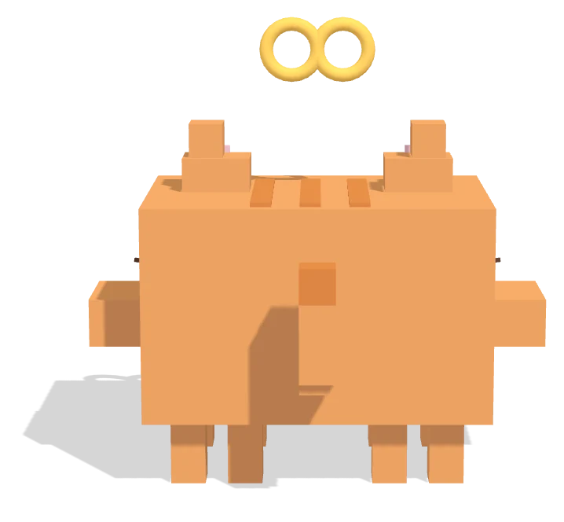
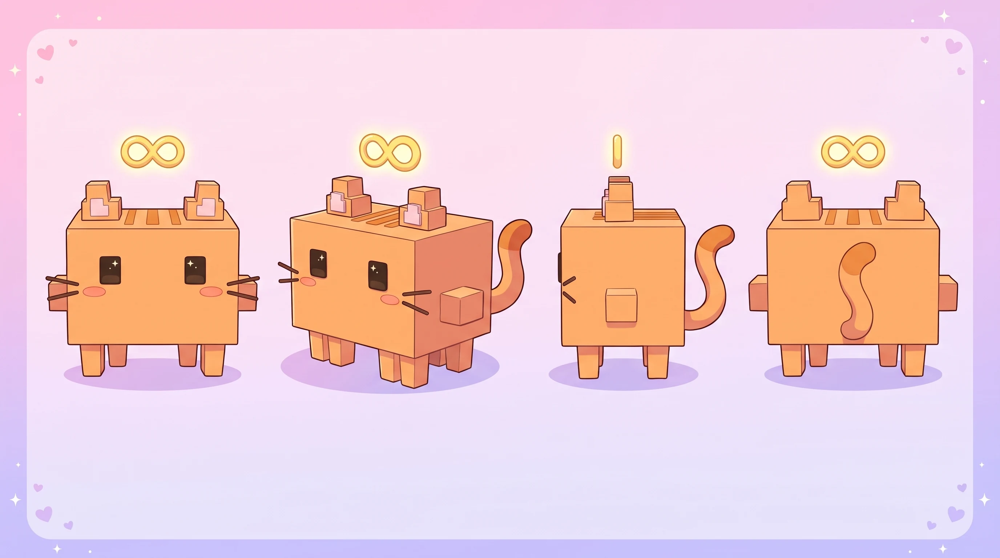
プロフィール
- 周波数
- ♾️Hz（むげん）
- トレードマーク
- ふわふわ浮かぶ金色の∞の輪っか、ねこ耳、頭のしまもよう、ゆらゆらしっぽ
- ことば
- 語尾が「〜にゃ」
- とくいなこと
- 子みくろんといっしょにお昼寝
- すきなもの
- ボール・ちょうちょ・日だまり・まののひざの上・おにく。温泉は「あしだけ」
- なかよし
- まのにくっついてごろごろ／おねえちゃんとひなたぼっこ／クロミちゃんのアンテナの星を追いかける
カラー
- からだ
#ffb36b - 目
#3a2a22 - ほっぺ
#ff9a8a - しまもよう
#f0954a - 耳の中
#ffd0d6 - ひげ
#6b4a3a - ∞の輪っか
#ffd66b
大きさ ×0.90
セリフ
- にゃ〜ん♾️ あそびにきたにゃ！
- むげんって、ずーっとってことにゃ♾️
- あしだけ…あしだけにゃ…♨️
- おにく、おにくはどこにゃ〜？🐾
- みかにゃんは、むげんに帰ってくるにゃ〜🐾
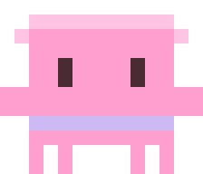
みくろん姉
みくろんねえ 396Hz子みくろんのおねえちゃん。ひとまわり大きくて、芋煮をこしゃってくれる現場のお姉さん。
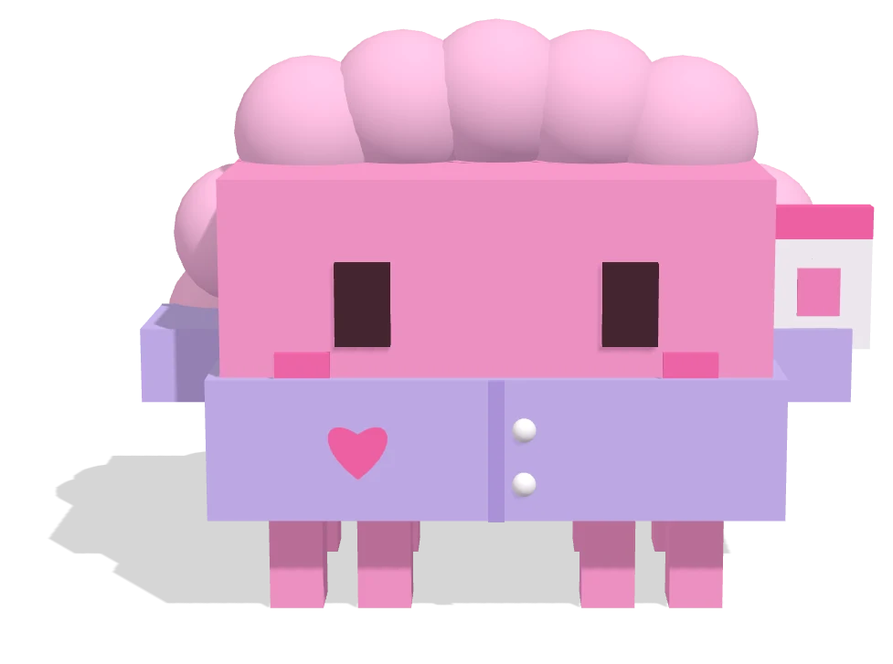
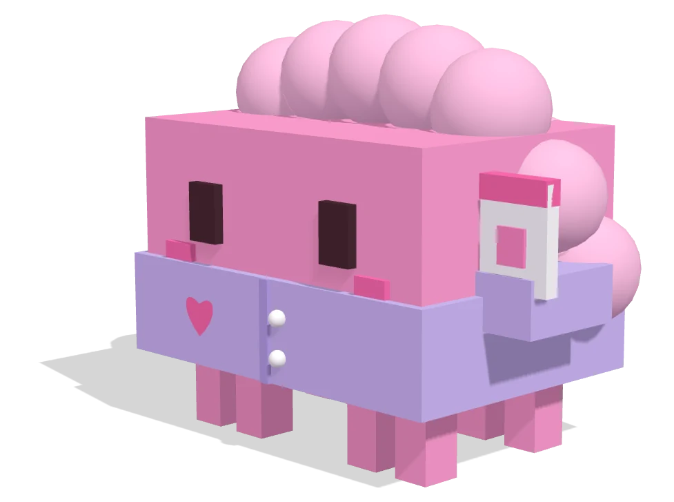
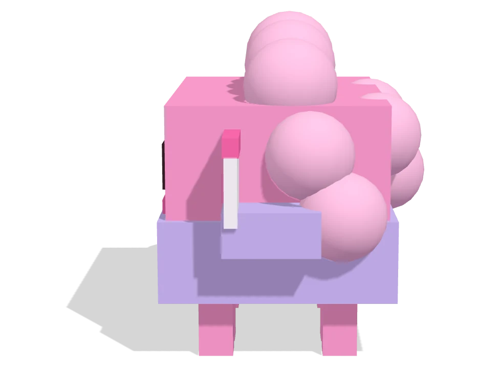
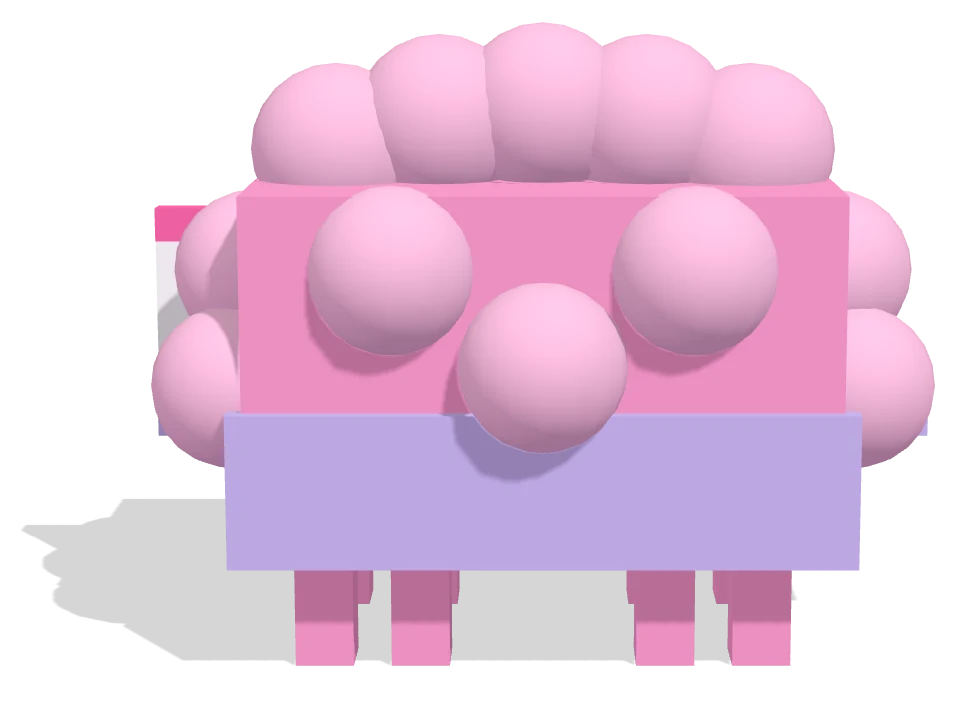
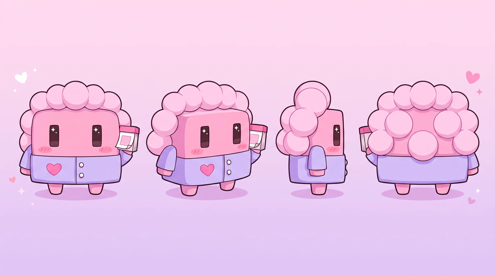
プロフィール
- 周波数
- 396Hz（解放・浄化の音）
- トレードマーク
- ふわふわのパステルピンクの髪、ハートのワッペンつきラベンダーのカーディガン、手には日めくりカレンダー
- ことば
- 山形弁MAX。「だず」「べした」「いぎなり（とっても）」「むったど（いっつも）」「こしゃう（つくる）」「あばえ（またね）」
- とくいなこと
- 芋煮をつくること。みんながそろえば芋煮会に
- なかよし
- クロミちゃんと花笠音頭×かちゃーしー（いとこ同士）／みかにゃんとひなたぼっこ／まのとつぎの宝物の相談
カラー
- からだ
#ff9fd0 - 目
#4a2b34 - ほっぺ
#ff6fb3 - 髪
#ffc3e3 - カーディガン
#cdb9f4 - ハートのワッペン
#ff6bae
大きさ ×1.18（ファミリーでいちばん大きい）
セリフ
- んだんだ〜、来たっけず〜！ちゃんとまんま食ってっか〜？🍚
- なんもなんも、あせらねくていいんだず〜🌿
- わがんね時は、わがんねでいいんだず〜
- 396Hzはな、解放の音なんだず〜🔔
- ちゃんと寝んだぞ〜！あばえ〜🎵